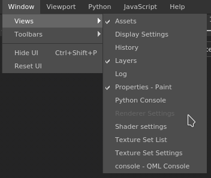

| Action | Description |
|---|---|
| Views | Lists the windows available in the interface (the checkbox indicate if it is currently visible). |
| Toolbars | Lists the toolbars available in the interface (the checkbox indicate if it is currently visible, which allows to toggle them): Docks, Plugins & Tools. |
| Hide UI | Hides all the windows and docks of the interface and maximize the viewport(s). |
| Reset UI | Resets the current window layout to default. |